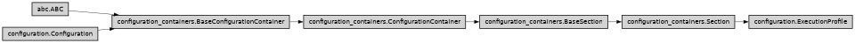

ExecutionProfile
- class ase2sprkkr.configuration.ExecutionProfile(definition, container=None)[source]
Mutable named execution profile stored in ASE2SPRKKR configuration.
Class hierarchy

Constructor
- __init__(definition, container=None)
Create the container and its members, according to the definition
- read_only = False
- _abc_impl = <_abc._abc_data object>